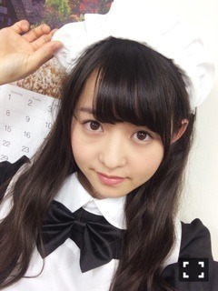

| 2014/11 05 Wed | 黄昏サンドイッチ。 612回目 |

ヒーターの季節になってきました。
横浜握手会2日間
ありがとうございました！
個別握手会
初の5部制でした。
ニット used
パンツ used

インナー JOURNAL STANDARD
ロングカーディガン kastane
ブーツ i
ありがたいことに、
途切れることなく
たくさんの方が来てくれました。
ありがとうありがとう
全国握手会
みなみと！
ふわふわしてたよー
みなみファンのみなさん
ありがとうございました。
アンダーライブに来てくれ方が
たくさん握手しに並んでくれました！
最近気になる
ライブで見て好きになった
と言ってもらえるのが嬉しい。

ツンデレメイド好評でした。
そして久しぶりのミニライブ。
あの日 僕は咄嗟に嘘をついた
披露！
ここで、1stアルバムと、
クリスマスライブと、
なんと12月12日に
有明コロシアムでアンダーライブ
が行われることが発表されました！
正直、信じられなくて
アンダーライブが始まってからの
いろんなことを思い出してたら
震えが止まらなかったです。
不安でいっぱいですが、
10枚目の節目、
クリスマスライブ初日を
アンダーメンバーに任せてくれて
すごくすごく嬉しかったです。
小さい箱での一体感と
パフォーマンスを
有明コロシアムで
どう魅せるかが課題です。
初日にクリスマスを
思いっきり盛り上げていきたい！
アンダーライブ セカンド・シーズン FINAL！〜Merry X'mas "イヴ" Show 2014〜
2014年12月12日（金）
Merry X'mas Show 2014
2014年12月13日（土）
2014年12月14日（日）※2回公演
2014年12月13日（土）
2014年12月14日（日）※2回公演
そして、1月7日発売になる
1stアルバムの収録曲は
表題曲10曲の他、
カップリング曲はなんと
ファン投票で決めるのだ。
待望の1stアルバム！！
わくわくするー
良い曲ばかりだから
僅差で決まりそうだなあ...
投票期間は
2014年11月6日(木)15時〜
2014年11月17日(月)23時59分
です！
投票方法の詳細は公式サイトみてね。

おやすみ☆
まりか
コメント(726)
2014/11/05 22:54